온실가스관리기사 (2019-09-21 기출문제)
1과목: 기후변화개론
1. 이동 오염원의 탄소배출량 저감방법으로 가장 거리가 먼 것은?
- 공기역학기술 적용차량 보급
- 바이오 연료 사용
- 에코드라이빙 교육
- 단거리 물류운송 차량의 대형화
(정답률: 96%)

2. 기후변화협약 중 Post-2020 감축목표 등 각국의 기여방안(INDC) 제출 범위, 제출시기, 협의절차, 제출정보 등을 담은 당사국 총회 결정문을 채택한 당사국 총회가 개최된 국가와 도시는?
- 카타르 도하
- 캐나다 몬트리올
- 페루 리마
- 프랑스 파리
(정답률: 61%)
3. 온실가스에 대한 설명으로 옳지 않은 것은?
- CH4-천연가스의 주성분으로 쓰레기 매입가스를 포집하여 활용할 수도 있다.
- PFCs-CFC를 대체하여 쓰고 있으며, 반도체의 세척용 등으로 활용된다.
- N2O-아디프산 생산이나 질소비료를 통해 발생된다.
- HFCs-가연성 독성가스로서, 전기제품, 변압기 등의 절연가스로 활용된다.
(정답률: 100%)
4. 기후변화의 영향과 취약성에 관한 설명으로 가장 거리가 먼 것은?
- 기후변화의 영향이 높고 적응력이 낮을 경우 사회시스템의 기후변화 취약성은 높다고 볼 수 있다.
- 기후변화의 영향이 높고 적응력이 높을 경우 사회시스템은 발전의 기회를 가질 수 있다.
- 기후변화에 대한 영향과 적응력이 모두 낮을 경우 사회시스템은 잔여위험을 가질 수 있다.
- 기후변화의 영향이 낮고 적응력이 높을 경우 사회시스템은 지속가능한 발전을 하지 못한다.
(정답률: 93%)
5. 교토의성서상 감축대상 가스로 지정한 6대 주요 온실가스에 해당하지 않는 것은?
- 수소불화탄소
- 염화불화탄소
- 육불화황
- 과불화탄소
(정답률: 84%)
6. 2020년 기준 국가 온실가스 배출 전망치 중 가장 높은 비중을 차지하는 것은?
- 가정부문
- 철도 수송 부문
- 산업 부문
- 폐기물 처리 부문
(정답률: 94%)
7. 기후변화 당사국총회 회차와 개최국이 일치하지 않는 것은?
- 제3차 당사국총회-일본 교토
- 제8차 당사국총회-인도 뉴델리
- 제13차 당사국총회-인도네시아 발리
- 제17차 당사국총회-폴란드 바르샤바
(정답률: 62%)
8. 기후변화에 관한 정부간 협의체(IPCC)가 다루지 않는 분야는?
- 기후변화 과학
- 배출량 거래제
- 기후변화 영향평가, 적응 및 취약성
- 배출량 완화, 사회 경제적 비용-편익 분석 등의 정책 분야
(정답률: 75%)
9. 기후변화 대응기술 및 정책에 대한 내용으로 가장 거리가 먼 것은?
- 무경농법은 수확한 농토를 갈지 않고 그루터기에 파종하는 방법으로서 농경지에서 온실가스 배출을 저감하는 방법에 활용할 수 있다.
- 보호지역제도 관리대안으로 UNESCO는 생물권 보전지역 지정제도를 운영하고 있다.
- 산림이 농경지나 산업용지, 도시용지로 바뀌면 자연의 이산화탄소 흡수능력이 약화되므로 토지이용 형태를 고려해야 한다.
- 생물 멸종을 막기 위해서는 특히 먹이사슬의 아래쪽에 있는 동물의 멸종을 막도록 하는 것이 보다 중요하고, 로드킬 예방을 위해 생태이동통로에 충붐한 먹이공급시설을 갖춘다.
(정답률: 92%)
10. 대기 중 이산화탄소에 관한 설명으로 옳지 않은 것은?
- 하와이 마루나로아에서 처음으로 관측했다.
- 농도는 여름에 낮고 겨울에 높은 경향을 나타낸다.
- 우리나라 대표농도는 안면도 기후변화 감시센터에서 측정한 자료이다.
- 전 세계적으로 매년 10ppm 정도씩 증가한다.
(정답률: 78%)
11. 기후변화가 수자원 요소에 미치는 영향으로 거리가 먼 것은?
- 지하수의 염수화
- 증발산량의 증가
- 담수자원의 증가
- 지표 및 지하수의 수질 악화
(정답률: 94%)
12. 온실효과에 관한 설명으로 거리가 먼 것은?
- 지구 재복사 과정에서 일부 적외선이 지구 바깥으로 나가지 못하고, 지구 대기권 내에 머물러 대기온도가 점차적으로 상승하는 현상을 말한다.
- 온실가스는 대기 중 성분비는 매우 작으나 미세한 농도 증가에도 대기의 온도를 민감하게 상승시킨다.
- 지구 표면의 온도는 대기 중 CO2와 H2O의 농도에 따라 크게 좌우된다고 볼 수 있다.
- 태양광선 중 파장이 400nm~700nm 정도의 가시광선이 대기권에 도달하면 72%는 먼지나 구름 등에 의해 반사되고, 18% 정도만이 대기에 흡수, 그 중 10% 정도만 지표에 도달한다.
(정답률: 76%)
13. 다음은 복사와 관련된 용어설명이다. ()안에 알맞은 것은?
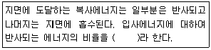
- 코리올리
- 플랑크
- 돕슨
- 알베도
(정답률: 94%)
14. 기후변화 관련 당사국총회의 주요내용으로 옳지 않은 것은?
- 제4차 당사국총회에서는 교토의정서의 세부이행절차 마련을 위한 행동계획을 수립하였다.
- 제7차 당사국총회에서는 독일에서 개최되었으며, 독일의 온실가스 감축의 부담방안으로 경제성장에 연동된 온실가스 배출목표를 제시하였다.
- 제12차 당사국총회에서는 선진국들의 2차 공약기간 온실가스 감축량 설정을 위한 논의일정에 합의하였다.
- 제16차 당사국총회에서는 Post-2012 기후체제 합의를 위한 협상을 지속하기로 하였다.
(정답률: 68%)
15. 기후변화관련 기구 중 "SBSTA"에 관한 가장 적합한 설명은?
- CSM관련 활동의 선도적 수행과, CERs 발급을 총괄한다.
- 기후변화관련 최고의사결정기구이다.
- 협약관련 불발사항 관리 및 행정적 재정적 책임 관리를 수행한다.
- 국가보고서 및 배출량 통계 방법론, 기술개발 및 기술이전에 관한 실무를 수행한다.
(정답률: 66%)
16. 기후변화와 관련한 가스상 오염물질 중 광산화제로 작용하기 때문에 눈에 통증을 일으키며, 빛을 분산시키므로 가시거리를 감소시키는 PAN의 구조식을 나타낸 것으로 옳은 것은?
- C6H5COOONO2
- C6H5OH
- CH3OH
- CH3COOONO2
(정답률: 74%)
17. 다음 설명에 알맞은 기후변동에 따른 이상현상으로 옳은 것은?
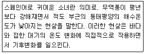
- 라니냐 현상
- 엘리뇨 현상
- 보레르따 현상
- 니루 현상
(정답률: 93%)
18. 아래 온실가스의 지구온난화 지수가 높은 순서부터 차례로 옳게 나열된 것은?
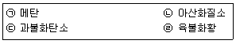
- ㉣＞㉡＞㉠＞㉢
- ㉣＞㉠＞㉢＞㉡
- ㉣＞㉡＞㉢＞㉠
- ㉣＞㉢＞㉡＞㉠
(정답률: 84%)
19. 기후변화로 인한 한반도의 환경적 영향과 가장 거리가 먼 것은?
- 생물다양성 감소
- 집중호우 등 자연재해
- 농수산물 생산변화에 따른 식생활 변화
- 폐기물 증가
(정답률: 88%)
20. 기후변화관련 국제기구 중 UN조직 내 환경활동을 촉진, 조정, 활성화하기 위해 설립된 환경전담 국제정부간 기구로 환경문제에 대한 국제적 협력을 도모하기 위한 기구로 가장 적합한 것은?
- WCRP
- UNIDO
- UNDP
- UNEP
(정답률: 83%)
2과목: 온실가스 배출의 이해
21. 다음은 온실가스ㆍ에너지 목표관리 운영 등에 관한 지침상 아연생산을 위한 배출공정이다. ()안에 알맞은 것은?
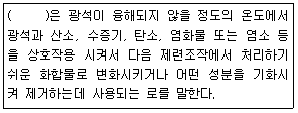
- 전해로
- 용해로
- 용융로
- 배소로
(정답률: 71%)
22. 온실가스ㆍ에너지 목표관리 운영 등에 관한 지침상 소다회 생산의 배출활동 개요에 관한 설명으로 옳지 않은 것은?
- 천연 소다회 생산공정에서는 이 공정 중에 트로나(Trona)(천연 소다회를 만들어 내는 중요한 광석)는 로터리 킬른 속에서 소성되고, 화학적으로 천연 소다회로 변형된다.
- 천연 소다회 생상공정에서 이산화탄소와 물이 이 공정의 부산물로 생성된다.
- 솔베이법 합성공정에서는 염화나트륨 수용액, 석회석, 야금 코크스, 암모니아는 소다회의 의 생산을 유도하는 일련의 반응에 사용되는 원료이다.
- 솔베이법 합성공정에서 암모니아는 급속도로 손실되므로, 일정 반응 후 계속 주입이 필요하다.
(정답률: 54%)
23. 온실가스ㆍ에너지 목표관리 운영 등에 관한 지침상 다음 고상 소각 폐기물 중 화석탄소질량분율이 다른 하나는?
- 음식물류
- 나무류
- 플라스틱류
- 정원 및 공원 폐기물류
(정답률: 67%)
24. 다음은 온실가스ㆍ에너지 목표관리 운영 등에 관한 지침상 철강 생상 공정의 보고대상 배출시설 중 어느 시설에 해당하는가?
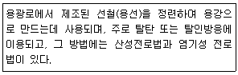
- 전로
- 코크스로
- 소결로
- 용선로
(정답률: 74%)
25. 온실가스ㆍ에너지 목표관리 운영 등에 관한 지침상 석유화학제품생산 공정배출시설에서의 보고 대상 배출시설에 해당하지 않는 것은?
- 메탄올 반응시설
- 에틸렌옥사이드 반응시설
- 테레프탈산 생산시설
- 수소 제조시설
(정답률: 67%)
26. 다음은 온실가스ㆍ에너지 목표관리 운영 등에 관한 지침상 항공기에서의 배출활동 개요이다. ()안에 알맞은 것은?
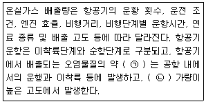
- ㉠ 90%, ㉡ 10%
- ㉠ 10%, ㉡ 90%
- ㉠ 50%, ㉡ 50%
- ㉠ 75%, ㉡ 23%
(정답률: 69%)
27. 온실가스ㆍ에너지 목표관리 운영 등에 관한 지침상 이동연소 부문의 철도차량에 관한 설명으로 옳지 않은 것은?
- 철도 부문은 일반적으로 디젤, 전기, 증기 세 가지 중 하나를 사용하여 구동하는 철도기관차에서 배출되는 온실가스 배출량을 산정한다.
- 철도차량은 고속차량, 전기기관차, 전기동차, 디젤기관차, 디젤동차, 특수차량 등 6종류가 있다.
- 디젤기관차와 디젤동차의 주된 차이점은 전기동력의 사용 유무와 관련이 있다.
- 증기기관차는 산업용으로만 한정하고 있으며, 발생되는 온실가스는 상대적으로 많다.
(정답률: 66%)
28. 온실가스ㆍ에너지 목표관리 운영 등에 관한 지침상 석유정제활동에서의 보고대상 배출시설이 아닌 것은?
- 수소제조시설
- 촉매재생시설
- 코크스 제조시설
- 나프타 분해시설
(정답률: 68%)
29. 온실가스ㆍ에너지 목표관리 운영 등에 관한 지침상 석회 생산 시 사용되는 소성로 중 로터리 킬른에서 배출되는 공정배출 온실가스는?
- CO2
- CH4
- N2O
- PFCs
(정답률: 55%)
30. 온실가스ㆍ에너지 목표관리 운영 등에 관한 지침상 유리생산 배출활동의 개요에 관한 설명으로 옳지 않은 것은?
- 유리생산 활동에서의 융해 공정 중 CO2를 배출하는 주요 원료는 MgCO3, H2CO3 및 NaHCO3이다.
- 배출원 카테고리에는 유리 생산뿐만 아니라 생산공정이 유사한 글래스올(glass wool) 생산으로 인한 배출도 포함된다.
- 유리의 제조에는 유리 원료뿐만 아니라 재활용된 유리 파편인 컬릿(Cullet)을 일정량 사용한다.
- 용기 생산에서의 컬릿 비율은 40~60%이지만, 유리 품질관리 차원에서 사용이 제한되기도 하며, 절연 섬유유리는 이보다 적은 컷릿을 사용한다.
(정답률: 49%)
31. 온실가스ㆍ에너지 목표관리 운영 등에 관한 지침상 석유화학제품 생산공정에 대한 개요이다. 옳지 않은 것은?
- 석유화학산업은 화석연료나 나프타 등의 석유정제품을 원료로 한다.
- 나프타로부터 에틸린, 프로필렌 등 기초유분을 생산하며 이때 온실가스가 배출된다.
- NCC는 나프타를 분해하는 설비로서 국내에서 많이 활용된다.
- 기초유분 하나를 중합하여 스티렌, AN, PVC 등을 생산한다.
(정답률: 46%)
32. 온실가스ㆍ에너지 목표관리 운영 등에 관한 지침상 전자산업의 보고대상 배출시설 공정으로 옳게 짝지어진 것은?
- 산화-식각 공정
- 식각-증착 공정
- 노광-증착 공정
- 노광-산화 공정
(정답률: 76%)
33. 온실가스ㆍ에너지 목표관리 운영 등에 관한 지침상 석탄 채굴 및 처리활동에서의 탈루 배출 보고대상 배출 온실가스에 해당하는 것은?
- CO2
- CH4
- C2O
- CO
(정답률: 66%)
34. 온실가스 배출시설에 사용되는 연료의 설명으로 옳지 않은 것은?
- 바이오가솔린(Biogasoline):해조류와 같은 바이오매스를 사용하여 생산하는 가솔린으로 분자당 6~12의 탄소를 포함한다. 바이오부탄올, 바이오에탄올이 알콜기인 것에 반해 바이오가솔린은 탄화수소로서 화학적으로 차이가 난다.
- 목탄(Chaecoal):목재 등 목탄생산을 위한 재료를 공기의 공급을 차단하고 가열하거나, 또는 공기를 아주 적게 하여 가열하였을 때 생기는 고체 생성물을 말하며, 재료는 보통 단단한 나무가 사용되며, 검탄ㆍ백탄ㆍ성형목탄으로 분류된다.
- 바이오디젤(Biodiesel):쌀겨 기름이나 식용유 등의 식물성 기름을 특수 공정으로 가공하여 경유와 섞어서 만든 디젤기관의 연료로 기존의 경유와 특성이 비슷하지만, 연소 시 공해가 거의 발생하지 않는 특징이 있다.
- 코크스로 가스(Coke Oven Gas):철강 산업의 용광로에서 코크스의 연소 시 생산되는 부생가스이다.
(정답률: 49%)
35. 온실가스ㆍ에너지 목표관리 운영 등에 관한 지침상 “기체, 액체 혹은 고체 상태의 원료 화합물을 반응기 내에 공급하여 기관 표면에서의 화학적 반응을 유도함으로써 반도체 기판위에 고체 반응 생성물인 박막층을 형성하는 공정”으로 전자 산업, 특히 반도체 공정에 주로 이용하는 공정은?
- 식각공정
- 화학기상 증착공정
- 성형공정
- 세정공정
(정답률: 63%)
36. 온실가스ㆍ에너지 목표관리 운영 등에 관한 지침상 폐기물관련 부문 온실가스 배출원과 산정, 보고해야 하는 배출가스로 옳지 않은 것은?
- 매립된 폐기물의 분해과정 중 CO2 발생
- 비생물계 기원 폐기물의 소각으로 인한 CO2 발생
- 하수슬러지의 혐기성 소화에 의한 CH4 발생
- 퇴비화로 인한 CH4, N2O 발생
(정답률: 38%)
37. 온실가스ㆍ에너지 목표관리 운영 등에 관한 지침상 촉매를 활용한 수증기 개질방법으로 암모니아를 생산하는데 거치는 공정단계의 순서로 옳은 것은?
- 천연가스 탈황→메탄화→일산화탄소의 전환→수증기 1차 개질→이산화탄소 제거→공기로 2차 개질→암모니아 합성
- 천연가스 탈황→일산화탄소의 전환→수증기 1차 개질→메탄화→공기로 2차 개질→이산화탄소 제거→암모니아 합성
- 천연가스 탈황→일산화탄소의 전환→수증기 1차 개질→공기로 2차 개질→메탄화→이산화탄소 ㅈ거→암모니아 합성
- 천연가스 탈황→수증기 1차 개질→공기로 2차 개질→일산화탄소의 전환→이산화탄소 제거→메탄화→암모니아 합성
(정답률: 76%)
38. 다음은 온실가스ㆍ에너지 목표관리 운영 등에 관한 지침상 탄광시설에서 발생하는 메탄가스 배출량 산정방식(Tier 3)이다. 각 인지별 설명으로 옳지 않은 것은?
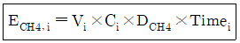
- Vi:탄광의 시설 ⅰ로부터 누출되는 가스 유량(m3/min)
- Ci:누출시설 ⅰ의 배출가스 중 CH4의 부피분율
- DCH4의 밀도 (20℃, 1기압에서 0.6669×10-3ton/m3)
- Timei:탄광의 시설로부터 CH4 반응시설 ⅰ로 도달하는데 걸리는 시간(hr)
(정답률: 43%)
39. 온실가스ㆍ에너지 목표관리 운영 등에 관한 지침상 하ㆍ폐수 처리 및 배출의 보고대상 시설에 해당하지 않는 것은?
- 기축분뇨공공처리시설
- 공공하수처리시설
- 분뇨처리시설
- 퇴비화 시설
(정답률: 66%)
40. 온실가스ㆍ에너지 목표관리 운영 등에 관한 지침상 이동연소 배출시설 중 도로 차량의 배출시설을 구분하는 방법으로 가장 거리가 먼 것은?
- 전기자동차
- 승용자동차
- 승합자동차
- 화물자동차
(정답률: 75%)
3과목: 온실가스 산정과 데이터 품질관리
41. 온실가스ㆍ에너지 목표관리 운영 등에 관한 지침에서 배출량에 따른 시설규모에 대한 설명으로 옳지 않은 것은?
- B그룹은 연간 5만 톤 이상, 연간 50만 톤 미만의 배출시설이다.
- 연간 100만 톤 이상의 배출시설은 D 그룹에 해당한다.
- 관리업체는 신설되는 배출시설규모 결정 시 신설되는 배출시설의 예상 온실가스 배출량을 계산하여 그 값에 따라 시설규모를 결정한다.
- 배출시설규모 최종 결정 이후, 최근에 제출된 명세서의 온실가스 배출량보다 최근에 제출된 3개년도 명세서의 평균배출량이 큰 경우, 최근에 제출된 3개년도 명세서의 평균배출량에 따라 시설규모를 결정한다.
(정답률: 75%)
42. 온실가스ㆍ에너지 목표관리 운영 등에 관한 지침상 측정기기 설치 및 운영관리를 위한 “상대정확도 시험”에 관한 설명으로 가장 적합한 것은?
- 관리업체의 측정기기 또는 데이터 수집기간의 통신상태 및 대기분야 환경오염공정시험기준에 적합한지 여부를 확인하는 시험
- 측정 자료 간의 오차율을 비교하여 정확성을 확인하는 시험으로 대기분야 환경오염공정시험기준에 따라 적합한지 여부를 확인하는 시험
- 측정기기의 설치위치, 환경조건, 기능, 성능 등이 대기분야 환경오염 공정시험기준에 적합한지 여부를 확인하는 것
- 상대정확도 시험은 확인검사와 통합시험으로 구분할 수 있음
(정답률: 52%)
43. A하수처리장은 메탄올 450톤 회수하여 연료로 사용하였으며(메탄 회수율은 80%), 아래와 같은 조건으로 처리장은 운영한다. 이 때 온실가스 배출량(tCO2-eq)으로 가장 가까운 값은? (단, 온실가스ㆍ에너지 목표관리 운영 등에 관한 지침기준, 회수한 메탄의 고정연소황동 배출량은 제외, CH4 배출계수 0.48 kgCH4/kgBOD, N2O 배출계수 0.0⑤kgN2O-Nkg-T-N, N2O의 분자량 44.013, N2의 분자량 28.013, 슬러지 반출은 없음)
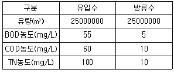
- 3150
- 8629
- 11787
- 18087
(정답률: 61%)
44. 온실가스ㆍ에너지 목표관리 운영 등에 관한 지침상 "생산물“의 원소함량 등을 분석하고자 하는 경우 최소 분석 주기기준으로 옳은 것은?
- 주 1회
- 월 1회
- 분기 1회
- 반기 1회
(정답률: 71%)
45. 온실가스ㆍ에너지 목표관리 운영 등에 관한 지침상 교통분야 특례에 관한 설명으로 옳지 않은 것은?
- 동일 법인 등이 여객자동차 운수사업자로부터 차량을 일정 기간 임대 등의 방법을 통해 실질적으로 지배하고 통제할 경우 당해 법인 등의 소유로 본다.
- 일반화물자동차 운송 사업을 경영하는 법인 등이 허가받은 차량은 차량소유 유무에 상관없이 당해 법인 등이 지배적인 영향력을 미치는 차량으로 본다.
- 관리업체 지정을 위해 온실가스 배출량을 산정할 때에는 국제항공과 국제해운 부문도 포함한다.
- 화물운송량이 연간 3천만 톤-km 이상인 화주기업의 물류부문에 대해서는 국토교통부에서 다른 부문의 소관 관장기관에게 관련 자료의 제출을 요청할 수 있다.
(정답률: 77%)
46. 다음 중 품질보증(QA) 활동에 해당하는 사항은? (단, 품질관리(QC)활동과 비교)
- 측정가능한 목적이 만족되었는지 검증하고 주어진 과학적 지식 및 가용성이 현재 상태에서 가장 좋은 배출량 산정결과를 나타내는지 검토ㆍ확인
- 자료의 무결성, 정확성 및 완정성을 보장하기 위한 일상적이고 일관적인 검사의 제공
- 배출량 산정자료의 문서화 및 보관, 모든 품질관리 활동의 기록
- 자료 수집 및 계산에 대한 정확성 검사와 배출량 감축량의 계산ㆍ측정, 불확도 산정, 정보의 보관 및 보고활동
(정답률: 60%)
47. 활동자료의 수집방법론에서 아래 측정기기의 기호는 무엇을 나타내는가?
- 상거래 또는 증명에 사용하기 위한 목적으로 측정량을 결정하는 법정계량에 사용하는 측정기기
- 관리업체가 자체적으로 설치한 계량기로서, 국가표준기본법에 따른 시험기관, 교정기관, 검사기관에 의하여 주기적인 정도검사를 받는 측정기기
- 관리업체가 자체적으로 설치한 계량기이나, 주기적인 정도검사를 실시하지 않는 측정기기로서 가스미터, 오일미터 등이 있음
- 가스미터, 오일미터, 주유기, LPG 미터, 눈새김탱크, 눈새김탱크로리, 적산열량계, 전력열량계 등 법정계량기 및 그 외 계량기를 모두 포함
(정답률: 72%)
48. 온실가스ㆍ에너지 목표관리 운영 등에 관한 지침상 관리업게 A에서 납 생산공정에 따른 온실가스 배출량 산정시 Tier 1을 적용할 때, 활동자료 측정불확도 기준으로 적합한 것은?
- ±7.5% 이내의 납 생산량 자료를 사용한다.
- ±5.0% 이내의 납 생산량 자료를 사용한다.
- ±2.5% 이내의 납 생산량 자료를 사용한다.
- ±2.0% 이내의 납 생산량 자료를 사용한다.
(정답률: 69%)
49. 온실가스ㆍ에너지 목표관리 운영 등에 관한 지침상 온실가스 배출량 산정결과의 정확성을 향상시키기 위해서는 배출량 산정결과의 정확성을 향상시키기 위해서는 배출계수의 고도화가 필요하다. 다음 중 온실가스 배출량 산정 시 신회도가 가장 낮은 것은?
- 사업장 고유 배출계수
- 국가 고유 배출계수
- IPCC 기본 배출계수
- 사업장 내 연속측정 방법에 따른 배출량 산정
(정답률: 71%)
50. 온실가스ㆍ에너지 목표관리 운영 등에 관한 지침상 석회공정에서는 고온에서 석회석을 가열하여 석회를 생산하는 과정 중 이산화탄소가 발생된다. 생산된 석회가 100톤이라고 할 때 배출되는 이산화탄소의 양은? (단, 석회생산량 당 CO2 배출계수는 0.75(tCO2/t-석회생산량)이다.)
- 0.75톤
- 7.5톤
- 75톤
- 750톤
(정답률: 76%)
51. 온실가스 배출권거래제 운영을 위한 검증지침상 검증기관의 지정, 관리, 준수사항과 관련된 사항으로 옳지 않는 것은?
- 검증기관 지정의 유효기간은 지정일로부터 3년이다.
- 검증기관은 지정 유효기간 이후에 재지정을 받고자 할 경우 지정기간 만료일 이전 3개월 전까지 검증기관 재지정 신청서를 제출하여야 한다.
- 검증기관은 검증업무 수행내역 등 자료를 5년 이상 보관하여야 한다.
- 검증기관은 반기별 검증업무 수행내역을 작성하여 매 반기 종료일로부터 10일 이내에 국립환경과학원장에게 제출하여야 한다.
(정답률: 48%)
52. 온실가스 배출활동을 직접 배출과 간접배출로 구분할 때, 다음 중 직접배출에 해당되지 않는 것은?
- 공정배출
- 탈루배출
- 외부로부터 구입되어 조직 내에서 사용되는 전기 생산과정에서 배출
- 이동연소 배출
(정답률: 75%)
53. 온실가스ㆍ에너지 목표관리 운영 등에 관한 지침상 관리업체의 온실가스배출량 산정보고에 관한 설명으로 옳지 않은 것은?
- 관리업체는 보고대상 배출시설 중 연간 배출량이 200tCO2-eq 미만인 소규모 배출시설은 배출시설단위로 보고하지 않고 사업장단위 총 배출량에 포함하여 보고할 수 있다.
- 관리업체는 명세서를 작성한 후 검증기관의 검증을 거쳐 매년 3월 31일까지 부문별 관장기관에 제출해야 한다.
- 세부적인 온실가스 배출량 등의 산정방법이 제시되지 않은 온실가스 배출활동은 관리업체가 자체적으로 산정방법을 개발하여 온실가스 배출량을 산정하여야 한다.
- 관리업체는 연간 모니터링 계획 등을 포함한 온실가스 배출량의 산정ㆍ보고와 관련한 자료를 문서화하여 최소 5년 이상 보관하여야 한다.
(정답률: 66%)
54. 관리업체인 H사는 판유리 생산을 위해 사용하는 유리 용해량이 50000톤이며, 컬릿 비율은 0.2이다. 판유리 생산과정에서 CO2 배출량(tCO2)은? (단, CO2 배출계수는 0.21tCO2/t-용해된 유리량이고, 온실가스ㆍ에너지 목표관리 운영 등에 관한 지침을 기준으로 함)
- 8400000
- 2100000
- 8400
- 2100
(정답률: 58%)
55. 온실가스ㆍ에너지 목표관리 운영 등에 관한 지침상 다음 설명에 해당하는 모니터링 유형은?
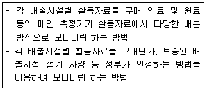
- A 유형
- B유형
- C유형
- D유형
(정답률: 45%)
56. 다음은 온실가스 배출권 거래제 운영을 위한 검증지침상 검증기관의 변경신고에 관한 사항이다 ()안에 알맞은 것은?
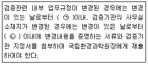
- ㉠ 7일, ㉡ 15일
- ㉠ 15일, ㉡ 7일
- ㉠ 7일, ㉡ 30일
- ㉠ 30일, ㉡ 7일
(정답률: 52%)
57. 온실가스ㆍ에너지 목표관리 운영 등에 관한 지침상 온실가스 소량배출사업장 기준에 관한 사항으로 옳지 않은 것은?
- 온실가스 배출량 기준 3 Kilotonnes CO2-eq 미만이다.
- 에너지소비량 기준 50 terajoules 미만이다.
- 해당 연도 1월 1일을 기준으로 최근 3년간 사업장에서 배출한 온실가스와 소비한 에너지의 연평균 총량을 기준으로 한다.
- 신설 등으로 인해 최근 3년간 자료가 없을 경우에는 보유(최초 가동연도를 포함한다.)하고 있는 자료를 기준으로 한다.
(정답률: 38%)
58. 온실가스 배출권거래제 운영을 위한 검증지침에 의거 중요성의 양적 기준치는 할당대상업체의 배출량 수준에 따라 차등화한다. 검증 시 중요성 평가의 양적 기준치 기준으로 옳지 않은 것은?
- 총 배출량이 500만 tCO2-eq 이상인 할당대상 업체는 총 배출량의 2.0%
- 총 배출량이 50만 tCO2-eq 이상 500만 tCO2-eq 미만인 할당대상 업체는 총 배출량의 2.5%
- 총 배출량이 50만 tCO2-eq 미만인 할당대상 업체는 총 배출량의 5.0%
- 총 배출량이 25만 tCO2-eq 미만인 할당대상 업체는 총 배출량의 7.50%
(정답률: 58%)
59. 온실가스ㆍ에너지 목표관리 운영 등에 관한 지침상 온실가스 소량배출사업장 기준이다. ()안에 가장 적합한 수치는?
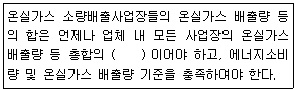
- 1000분의 50 미만
- 1000분의 100 미만
- 1000분의 150 미만
- 1000분의 300 미만
(정답률: 67%)
60. 온실가스ㆍ에너지 목표관리 운영 등에 관한 지침상 용어의 정의 중 “온실가스 감축 및 에너지 절약과 관련하여 경제적ㆍ기술적으로 사용이 가능하면서 가장 최신이고 효율적인 기술, 활동 및 운전방법”을 말하는 것은?
- 최적가용기술
- 실용신안기술
- 벤치마크기술
- 적정운영기술
(정답률: 73%)
4과목: 온실가스 감축관리
61. 교토의정서에서 CDM사업은 해당사업을 수행하지 않았을 경우에도 발생했을 감축에 추가적이어야 한다고 언급하고 있는데, 다음 중 여기서 언급하는 추가성에 포함되지 않는 것은?
- 경제적 추가성
- 논리적 추가성
- 기술적 추가성
- 환경적 추가성
(정답률: 66%)
62. 다음은 고형 연료와 기술 중 바이오메스에 관한 설명이다. ()안에 알맞은 것은?
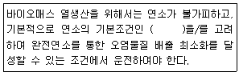
- Resistance(저항성)
- 3T(Temperature, Time Turbulence)
- Conversion Rate(전환율)
- Hazzrd Risk(위험도)
(정답률: 74%)
63. 이산화탄소 연소 전 포집 기술 중 화학적 흡수법에 주로 사용되는 흡수제로 틀린 것은?
- 메탄올(Methanol)
- 탄산칼륨(Potassium Carbonate)
- 모노에탄올아민(MEA)
- 메틸다이에틸아민(MDEA)
(정답률: 68%)
64. 자료의 불확실성이 결과에 미치는 영향을 정량화하여 규명하는 시스템적인 절차인 불확도 분석에 관한 내용으로 옳지 않은 것은?
- 정량적인 분석 결과를 제공하므로 결과의 신뢰성이 높다.
- 모든 입력 자료를 확률분포로 나타내는데 한계가 있다.
- 수행과정이 간단하고, 전문지식이 필요 없다.
- 분석 결과에 대하여 의사 결정이 용이하다.
(정답률: 71%)
65. 우리나라에서 분류하고 있는 신ㆍ재생에너지 중 “신에너지”에 해당하지 않는 것은?
- 연료전지
- 해양에너지
- 석탄을 액화ㆍ가스화한 에너지
- 수소에너지
(정답률: 63%)
66. 매립가스 반전 적용방법 중 증기터빈에 관한 설명으로 옳지 않은 것은?
- 대규모 시설일수록 경제적 효과가 증가하는 것으로 알려져 있다.
- 가스엔진과 가스터빈에 비해 운영보수비가 저렴한 편이다.
- 발전시설과 분리되어 있어서 매립가스 내 불순물의 영향을 받지 않는 장점이 있다.
- 초기 시설비는 저렴하나, 가스엔진과 가스터빈에 비해 NOx와 CO의 배출량이 많다.
(정답률: 74%)
67. 다음 중 온실가스 감축 효과가 가장 큰 것은?
- 이산화탄소 1000톤 감축
- 메탄 150톤 감축
- 아산화질소 25톤 감축
- 육불화황 1톤 감축
(정답률: 73%)
68. 외부사업 추가성 평가 절차 및 방법 중 만족되어야 하는 추가성 기준내용에 관한 설명으로 옳지 않은 것은? (단, 외부사업 타당성 평가 및 감축량 인증에 관한 지침기준)
- 경제적 추가성 분석은 일반감축사업 대상 중, 연간 60,000 tCO2-eq 초과의 예상 온실가스 감축량 혹은 흡수량을 갖는 사업에 대하여 추가적으로 분석하도록 한다.
- 추진하고자 하는 외부사업이 현행 법ㆍ제도에 의해 제한을 받아야 하며, 외부사업의 내용이 현행 법ㆍ제도에 의하사항으로 규정되어 있어야 한다.
- 경제성이 부족하여 외부사업으루 추진하기 어려우나, 외부사업 인증실적 활용을 통하여 경제성 확보가 가능한 사업이어야 한다.
- 지방자치단체 등의 기관에서 온실가스 감축에 필요하여 정책적으로 권장하는 사업은 자발적 참여에 의한 활동으로 간주할 수 있다.
(정답률: 25%)
69. 수소에너지의 특징으로 거리가 먼 것은?
- 풍부한 자원으로부터 얻을 수 있는 청정2차 에너지이다.
- 안전성이 매우 높고, 대량으로 값싸게 제조할 수 있을 뿐만 아니라, 제조기술의 효율성이 99%이상으로 높다.
- 에너지의 저장 및 수송이 가능한 화학적 매체이다.
- 연료전지 시스템을 사용하여 직접 발전이 가능하다.
(정답률: 78%)
70. 다음 연료전지(Fuel Cell)의 형태에 따른 설명으로 옳지 않은 것은?
- 인산형(PAFC) 연료전지는 백금을 주촉매로 사용하고, 150~250℃ 정도에서 운전한다.
- 알칼리형(AFC) 연료전지는 외부 연료개질기가 필요하며, 50~120℃ 정도에서 운전한다.
- 용융탄산염형(MCFC) 연료전지는 550~700℃ 정도에서 운전하며, 대규모 발전에 사용한다.
- 고체산화물형(SOFC) 연료전지는 백금을 주 촉매로 사용하고, 100~150℃ 정도에서 운전한다.
(정답률: 64%)
71. 온실가스ㆍ에너지 목표관리 운영 등에 관한 지침상 관리업체가 제출한 이행실적 중 부문별 관장기관이 확인할 사항과 거리가 먼 것은?
- 이행계획과의 연계성 및 정확성 여부
- 목표에 대한 이행여부
- 검증결과의 파급효과
- 개선명령의 이행여부
(정답률: 61%)
72. 온실가스 감축 이행계획서 작성절차 중 QC 수립에 관한 내용과 거리가 먼 것은?
- 산정 과정의 적절성
- 자체 검증 과정의 적절성
- 산정 결과의 적절성
- 보고의 적절성
(정답률: 53%)
73. 풍력발전의 특징 및 입지조건으로 옳지 않은 것은?
- 재생가능한 무공해 에너지원이며, 유지보수가 용이한 편이다.
- 오랜 기술축적으로 인한 기술성숙도와 가격경쟁령을 가지고 있다.
- 설치비용은 저렴하나, 건설 및 성치기간이 상대적으로 길다.
- 발전량은 풍속과 풍차의 크기에 좌우되며, 풍력으로 발전하기 위해서는 평균 4m/s 이상의 풍속이 되어야 한다.
(정답률: 61%)
74. 온실가스ㆍ에너지 목표관리 운영 등에 관한 지침에 따라 분문별 관장기관이 조기감축실적을 평가할 때 교려사항과 가장 거리가 먼 것은?
- 조기행동의 추가성
- 초기행동의 실제성
- 초기행동에 따른 감축효과의 지속성
- 초기행동의 자율성
(정답률: 57%)
75. 온실가스 감축사업에서 베이스라인 방법론의 구성요소로 거리가 먼 것은?
- 감축사업에 따른 환경영향과 전망(Environmental Effect & Prospect)
- 감축사업의 경계(Project Boundary)
- 온실가스의 누출(Leakage)
- 온실가스 배출 감축량(Emission Reduction)
(정답률: 45%)
76. 온실가스 직접 감축방법에 해당하지 않는 것은?
- 대체물질 개발
- 온실가스 활용
- 온실가스 전환
- 온실가스 은폐
(정답률: 75%)
77. CDM사업의 타당성을 평가하기 위한 ‘베이스라인 방법론(Baseline methodology)‘의 원칙 2가지로 옳게 짝지어진 것은?
- 윤리성, 정확성
- 총괄성, 보수성
- 투명성, 추가성
- 투명성, 보수성
(정답률: 48%)
78. 온실가스ㆍ에너지 목표관리 운영 등에 관한 지침상 관리업체가 조기감축실적을 분할하여 이행실적에 반영하고자 하는 경우에는 최초로 이행실적을 보고하는 연도를 포함하여 연속으로 최대 몇 회까지 반영할 수 있는가?
- 3회
- 5회
- 10회
- 12회
(정답률: 60%)
79. 음식물처리시설에서 온실가스를 저감할 수 있는 기술과 거리가 먼 것은?
- 혐기성 소화방식을 호기성 소화방식으로 전환시키는 대체 공정 적용
- 공정개선을 통한 메탄 포집 회수 이용의 극대화
- 혐기성 소화 과정에서 발생하는 메탄올 포집 회수 이용하는 활용공정 적용
- 음식물 건조 및 분쇄 후 미세하게 파쇄
(정답률: 75%)
80. 지열 냉난방 열교환 시스템을 설치할 경우의 특징으로 거리가 먼 것은?
- 연중 원하는 온도를 조절해 냉난방과 온수를 사용할 수 있어 편리하다.
- 수동작동 위주여서 관리인이 상주해야 하고, CO2의 배출이 많아 환경오염의 발생 우려가 큰 편이다.,
- 보일러 등의 설치공간을 기존에 비해 줄일 수 있어 부가가치가 높은 편이다.
- 경유, 석유, 가스 등 연료 없이 난방이 이루어질 수 있어 폭발이나 화재의 위험은 없는 편이다.
(정답률: 70%)
5과목: 온실가스관련 법규
81. 외부사업 타당성 평가 및 감축량 인증에 관한 지침에서 외부사업 시작일에 해당될 수 없는 것은?
- 외부사업의 시행과 관련된 계약일
- 사업의 타당성 연구, 사전조사를 위한 계약일
- 외부사업의 시행과 관련된 최초 지출일
- 외부사업의 작업 실행 또는 장치의 설치 시작일
(정답률: 50%)
82. 저탄소 녹색성장 기본법 시행령상 온실가스 감축 국가목표는 2030년 국가 온실가스 총 배출량을 2030년의 온실가스 배출 전망치 대비 얼마까지 감축하는 것으로 하는가?(2021년 11월 변경된 목표치 반영)
- 100분의 20
- 100분의 27
- 100분의 30
- 100분의 40
(정답률: 61%)
83. 저탄소 녹색성장 기본법상 정부는 기후변화대응 기본계획을 몇 년마다 수립ㆍ시행하여야 하는가?
- 3년
- 5년
- 10년
- 15년
(정답률: 67%)
84. 다음은 온실가스 배출권의 할당 및 거래에 관한 법률상 국가 배출권 할당계획 수립에 관한 사랑이다. ()안에 가장 적합한 것은?
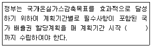
- 1개월 전
- 3개월 전
- 6개월 전
- 12개월 전
(정답률: 64%)
85. 온실가스ㆍ에너지 목표관리 운영 등에 관한 지침상 관리업체가 전자적 방식으로 작성한 이행실적 보고서를 부문별 관장기관에 제출해야 하는 시기로 옳은 것은?
- 매년 3월 31일 까지
- 매년 6월 30일 까지
- 매년 9월 30일 까지
- 매년 12월 31일 까지
(정답률: 34%)
86. 온실가스ㆍ에너지 목표관리 운영 등에 관한 지침상 배출량 등의 산정범위에 관한 사항이다. ()안에 가장 적합한 것은?
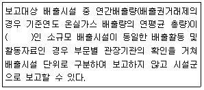
- 200tCO2-eq 미만
- 150tCO2-eq 미만
- 120tCO2-eq 미만
- 100tCO2-eq 미만
(정답률: 49%)
87. 다음은 온실가스 배출권의 할당 및 거래에 관한 법률상 과징금 부과에 관한 사항이다. ()안에 가장 적합한 것은?
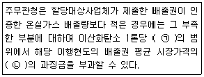
- ㉠ 10만원, ㉡ 3배 이하
- ㉠ 10만원, ㉡ 5배 이하
- ㉠ 5만원, ㉡ 3배 이하
- ㉠ 5만원, ㉡ 5배 이하
(정답률: 66%)
88. 온실가스 배출권의 할당 및 거래에 관한 법률상 국가온실가스감축목표를 효과적으로 달성하기 위해 정부는 계획기간별로 국가 배출권 할당계획을 수립한다. 다음 중 국가 배출권 할당계획에 포함되어야 할 내용과 가장 거리가 먼 것은?
- 국가온실가스감축목표를 고려하여 설정한 온실가스 배출허용총량
- 배출허용총량에 따른 해당 계획기간 및 이행연도별 배출권의 총수량에 관한 사항
- 배출사업장별 배출권의 변동과 할당거래를 위해 환경부장관이 지시하는 사항
- 이행연도별 배출권의 할당기준 및 할당향에 관한 사항
(정답률: 63%)
89. 저탄소 녹색성장 기본법상 녹생성장 추진의 지방자치단체의 책무로 거리가 먼 것은?
- 지방자치단체는 저탄소 녹색성장 실현을 위한 국가시책에 적극 협력하여야 한다.
- 지방자치단체는 저탄소 녹색성장대책을 수립ㆍ시행할 때 해당 지방자치단체의 지역적 특성과 여건을 고려하여야 한다.
- 지방자치단체는 에너지와 자원의 위치 및 기후변화 문제에 대한 대응책을 정기적으로 점검하여 성과를 평가하고 국제협상의 동향 및 주요 국가의 정책을 분석하여 적절한 대책을 마련하여야 한다.
- 지방자치단체는 관할구역 내에서의 각종 계획 수립과 사업의 저탄소 녹색성장에 미치는 영향을 종합적으로 고려하고, 지역주민에게 저탄소 녹색성장에 대한 교육과 홍보를 강화하여야 한다.
(정답률: 70%)
90. 온실가스 배출권의 할당 및 거래에 관한 법률 시행령상 부문별 관장기관은 외부사업 온실가스 감축량의 인증에 관한 업무를 부문별 관장기관이 공동으로 정하여 관보에 고시하는 바에 따라 위탁할 수 있는데, 다음 중 위탁할 수 있는 기관으로 거리가 먼 것은?
- 농촌진흥법에 따른 농업기술실용화재단
- 한국환경공단법에 따른 환국환경공단
- 한국교통안전공단법에 따른 한국교통안전공단
- 임업선진화법에 따른 한국임업진흥연구원
(정답률: 48%)
91. 다음은 온실가스 배출권의 할당, 조정 및 취소에 관한 지침상 할당신청의 중복, 누락, 오류 등 적절성 검토에 관한 사항이다. ()안에 가장 적합한 것은?(2020년 12월 24일 개정된 기준 적용됨)
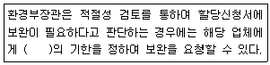
- 5일
- 15일
- 1개월
- 2개월
(정답률: 39%)
92. 온실가스 배출권의 할당 및 거래에 관한 법률 시행령에서 정의하는 무상할당 업종의 기준으로 옳지 않은 것은?
- 무역집약도가 100분의 30 이상인 업종
- 생산비용발생도가 100의 30 이상인 업종
- 생산비용 발생도가 100분의 5이상이고 무역집약도가 100분의 10 이상인 업종
- 수출집약도 또는 수출다양도가 100분의 30 이상인 업종
(정답률: 56%)
93. 온실가스ㆍ에너지 목표관리 운영 등에 관한 지침상 부문별 관장기관의 소관업무 분야가 잘못 연결된 것은?
- 농립축산식품부:농업ㆍ임업ㆍ축산ㆍ식품 분야
- 산업통상자원부:유통ㆍ해운 분야
- 환경부:폐기물 분야
- 국토교통부:건물ㆍ교통 분야(해운ㆍ항만 분야는 제외한다.)
(정답률: 63%)
94. 온실가스 배출권거래제 운영을 위한 검증지침상 “외부사업 사업자가 감축사업을 하지 않았을 경우 사업경계 내에서 발생 가능성이 가장 높은 조건을 고려한 온실가스 배출량”을 의미하는 용어는?
- 추가 배출량
- 부족 배출량
- 베이스라인 배출량
- 감축 배출량
(정답률: 69%)
95. 다음은 온실가스ㆍ에너지 목표관리 운영 등에 관한 지침상 이의신청서 작성과 관련된 사랑이다. ()안에 가장 적합한 것은?
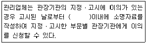
- 5일
- 10일
- 15일
- 30일
(정답률: 52%)
96. 온실가스ㆍ에너지 목표관리 운영 등에 관한 지침상 목표설정협의체 구성에 관한 설명으로 옳지 않은 것은?
- 위원은 당연직 위원과 위촉위원으로 구성한다.
- 위원장은 부문별 관장기관의 장이 지명하는 공무원이 된다.
- 위촉위원의 임기는 1년으로 하고 연임할 수 없다.
- 위원장 1명을 포함한 25ㅁ병 이내의 위원으로 구성한다.
(정답률: 58%)
97. 저탄소 녹색성장 기본법령상 다음 연도 온실가스 감축, 에너지 절약 및 에너지 이용효율목표를 통보받은 관리업체가 부문별 관장기관에게 제출해야 하는 이행계획에 포함되어야 하는 항목으로 거리가 먼 것은?
- 3년 단위의 연차별 목표와 이행계획
- 사업장별 배출 온실가스의 종류ㆍ배출량 및 사용 에너지의 종류ㆍ사용량 현황
- 주요 생산 공정별 온실가스 배출 현황 및 에너지 소비량
- 사업장별 일별 온실가스 배출시설 운휴시간 기록부 및 배출시설 담당자
(정답률: 56%)
98. 온실가스 배출권의 할당 및 거래에 관한 법률상 배출권 할당위원회에 관한 설명으로 옳지 않은 것은?
- 배출권 할당위원회에 위촉된 위원의 임기는 2년으로 하며, 한 차례만 연임할 수 있다.
- 할당위원회에는 환경부령으로 정하는 바에 따라 간사위원 2명을 둔다.
- 배출권 할당위원회의 회의는 재적위원 과반수 출석으로 개의하고, 출석위원 과반수의 찬성으로 의결한다.
- 배출권 할당위원회의 회의는 할당위원회의 위원장이 필요하다고 인정하거나 재적위원의 3분의 1 이상이 요구할 때에 개최한다.
(정답률: 53%)
99. 공공부문 온실가스ㆍ에너지 목표관리 운영 등에 관한 지침상 환경부장관은 행정안전부장관, 산업통상자원부장관 및 국토교통부장관 등의 검토결과를 반영하여 공공부문의 온실가스ㆍ에너지 목표관리 이행결과 종합보고서를 작성하고, 언제까지 국무총리에게 보고하여야 하는가?
- 매년 1월 31일까지
- 매년 3월 31일까지
- 매년 6월 30일까지
- 매년 12월 31일까지
(정답률: 55%)
100. 저탄소 녹색성장 기본법상 정부가 범지구적인 온실가수 감축에 적극 대응하고 저탄소 녹색성장을 효율적ㆍ체계적으로 추진하기 위하여 중장기 및 단계별 목표를 설정해야 하는 항목으로 가장 거리가 먼 것은?
- 도서지역 에너지 보급률 목표
- 에너지 절약 목표 및 에너지 이용효율 목표
- 신ㆍ재생에너지 보급 목표
- 온실가스 감축 목표
(정답률: 67%)